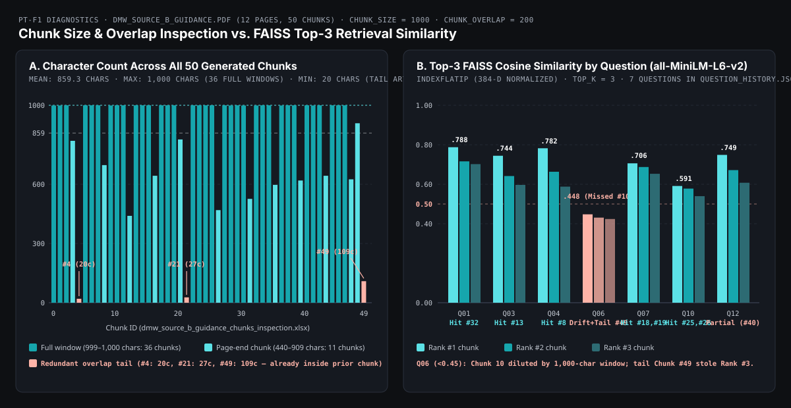
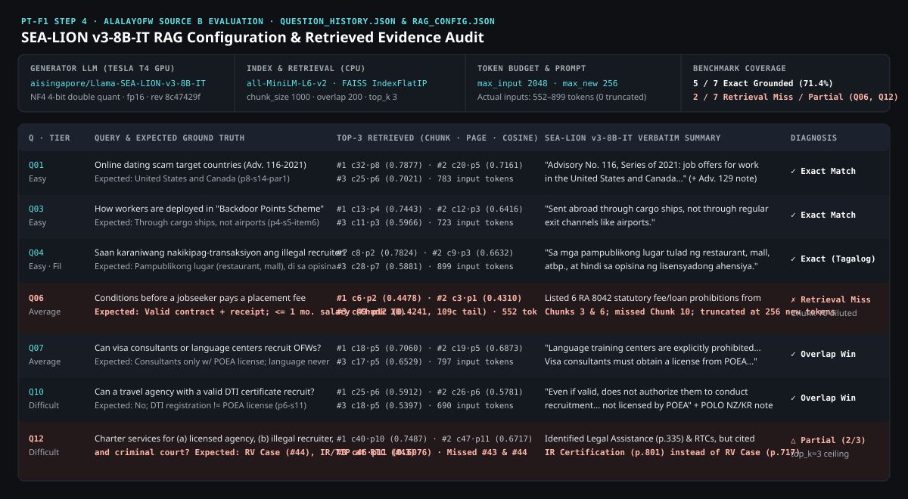
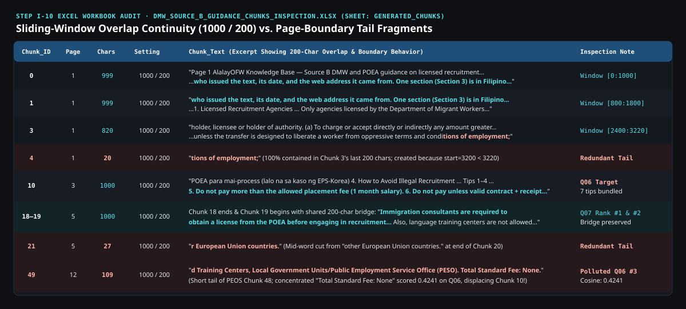

PT-F1: Optimizing Chunk Size and Overlap
A 1,000-character window with 200-character overlap preserved multi-chunk legal context for 5 of 7 evaluated SEA-LION runs, while exposing how topic dilution and page-tail fragments derail Top-3 retrieval.
- Pipeline
- FAISS · all-MiniLM-L6-v2 · SEA-LION v3-8B-IT
- Source corpus
- DMW / POEA Source B · 12 pages · 50 chunks
- Chunk config
- 1,000 chars · 200 overlap · top_k = 3
- Hardware
- Tesla T4 GPU · NF4 4-bit double quant
Summary
Built and audited a two-component Retrieval-Augmented Generation (RAG) document-indexing and question-answering pipeline in Google Colab over the 12-page AlalayOFW Source B compilation of Department of Migrant Workers (DMW) and POEA advisories (95 passages). The pipeline slices each page into 1,000-character chunks with 200-character overlap (50 chunks total), exports an Excel inspection workbook, indexes 384-dimensional MiniLM embeddings in FAISS, and evaluates grounded generation with 4-bit quantized Llama-SEA-LION-v3-8B-IT across bilingual and multi-hop legal test questions.
- Generated chunks 50 12 pages · mean 859.3 chars (min 20, max 1,000)
- Grounded accuracy 5 / 7 (71.4%) Exact grounded answers on logged SEA-LION runs
- Peak cosine similarity 0.7877 Q01 (English) · 0.7824 on Q04 (Filipino)
- Prompt context fit 100% 552–899 input tokens · 0 chunks truncated (2,048 cap)
Approach
This activity investigates how chunk size, chunk overlap, and retrieval depth (top_k) govern evidence quality in a domain-specific RAG system for Overseas Filipino Workers (AlalayOFW). The source document, dmw_source_b_guidance.pdf, compiles 95 verbatim passages across three parts: Part A (Pages 1–5, RA 8042 / RA 10022 illegal recruitment definitions, Filipino red-flag signs, avoidance tips, and modus operandi schemes), Part B (Pages 5–9, ten 2020–2021 POEA scam advisories), and Part C (Pages 10–12, eight services from the 2026 DMW Citizen's Charter 1st Edition).
- Component I — Extraction, Sliding-Window Chunking & Excel Audit (Steps I-1 to I-11):
pypdf.PdfReaderextracts text page-by-page and collapses whitespace runs viare.sub(r"\s+", " ", page_text).strip(). Thecreate_chunks()function applies a page-scoped sliding window ofCHUNK_SIZE = 1000characters andCHUNK_OVERLAP = 200characters (step_size = 800chars), ensuring chunks never cross page boundaries. All 50 resulting chunks are exported to a formattedopenpyxlworkbook (dmw_source_b_guidance_chunks_inspection.xlsx) with frozen headers and auto-filters for manual boundary inspection. - Dense Embedding & FAISS Vector Indexing (Steps I-12 to I-22): Each chunk is encoded on CPU with
sentence-transformers/all-MiniLM-L6-v2usingnormalize_embeddings=True, producing a(50, 384)float32matrix stored infaiss.IndexFlatIP(384). The index, chunk metadata, and run parameters are persisted torag_faiss.index,rag_chunks.json, andrag_config.json. - Component II — Token-Budgeted Prompting & SEA-LION v3-8B-IT Evaluation (Steps II-1 to II-10 & Step 4): Given a user query,
retrieve_documents()fetches theTOP_K = 3closest chunks andcreate_rag_prompt()assembles a strict evidence-only prompt labeled with[Page p, Chunk c]citations. While the baseline notebook demonstrates CPU/GPU generation withgoogle/flan-t5-base(512input /32output tokens), Step 4 upgrades the generator toaisingapore/Llama-SEA-LION-v3-8B-ITin 4-bit NF4 double quantization on a Tesla T4 GPU (max_input_tokens = 2048,max_new_tokens = 256) and evaluates it against the 12-question Source B benchmark.
- Sliding-window overlap
- Moving the 1,000-character window forward by 800 characters at a time repeats the last 200 characters of one chunk at the beginning of the next, preventing sentences cut at a boundary from losing context.
- L2-normalized IndexFlatIP
- Rescaling every 384-dimensional embedding vector to the same unit length lets FAISS compare passages purely by semantic direction (cosine similarity) using exact search.
- NF4 double quantization
- Compresses 8-billion LLM weights into 4-bit NormalFloat tensors and quantizes the scaling constants as well, fitting SEA-LION v3-8B-IT comfortably inside a single 15 GB Tesla T4 GPU.
- Token-boundary budgeting
- Measuring the question, instructions, and a small safety margin first before packing ranked chunks ensures the prompt never silently cuts off the user's question or trailing instructions.
Results
Of the 12 benchmark questions defined for Source B (Q01–Q12 across Easy, Average, and Difficult tiers), 7 runs were captured in question_history.json. Whenever the ground-truth passage ranked #1 with cosine similarity above 0.59, SEA-LION produced a complete, citation-grounded answer.
| Question · Tier | Top-1 Chunk | Rank #1 Cosine Similarity (all-MiniLM-L6-v2) |
|---|---|---|
| Q01 · Easy (Online dating scam countries) | Chunk 32 (p.8) | |
| Q04 · Easy · Filipino (Saan nakikipag-transaksiyon) | Chunk 8 (p.2) | |
| Q12 · Difficult (Citizen's Charter & RTC venue) | Chunk 40 (p.10) | |
| Q03 · Easy (Backdoor Points Scheme) | Chunk 13 (p.4) | |
| Q07 · Average (Visa consultants & language centers) | Chunk 18 (p.5) | |
| Q10 · Difficult (Travel agency with DTI certificate) | Chunk 25 (p.6) | |
| Q06 · Average (Placement fee conditions — missed #10) | Chunk 6 (p.2) |
Source B benchmark audit: retrieval vs. SEA-LION generation
| ID | Level | Question & Expected Ground Truth | Top-3 Retrieved (Chunk · Page · Score) | Tokens | SEA-LION Output & Verdict |
|---|---|---|---|---|---|
| Q01 | Easy | POEA online dating scam target countries? Expected: United States and Canada ( p8-s14-par1, B-79) |
#1 c32·p8·0.7877 #2 c20·p5·0.7161 #3 c25·p6·0.7021 |
783 | Correct Cited Advisory No. 116 (2021) for US & Canada; also noted South Korea & NZ from Rank #3. |
| Q02 | Easy | How many modules does the PEOS online seminar have? Expected: Eight (8) modules ( p12-s25, B-96, Chunk 48) |
— | — | Not logged in question_history.json (target resides in Chunk 48, p.12). |
| Q03 | Easy | In the "Backdoor Points Scheme," how are workers sent abroad? Expected: Through cargo ships, not airports ( p4-s5-item6, B-49) |
#1 c13·p4·0.7443 #2 c12·p3·0.6416 #3 c11·p3·0.5966 |
723 | Correct Stated verbatim: deployed through cargo ships, not regular exit channels like airports. |
| Q04 | Easy | Ayon sa POEA, saan karaniwang nakikipag-transaksiyon ang illegal recruiter? Expected: Pampublikong lugar (restaurant, mall), hindi sa opisina ( p2-s3-sign4) |
#1 c8·p2·0.7824 #2 c9·p3·0.6632 #3 c28·p7·0.5881 |
899 | Correct Bilingual Matched Filipino query to Chunk 8 and answered fluently in Tagalog. |
| Q05 | Average | When is illegal recruitment considered economic sabotage? Expected: By a syndicate (3+ conspiring) or large scale (3+ victims) ( p2-s2-par3) |
— | — | Not logged in question_history.json (target resides in Chunk 7, p.2). |
| Q06 | Average | What conditions should be met before a jobseeker pays a placement fee? Expected: Valid contract + official receipt; fee ≤ 1 month salary ( p3-s4-tip5/6, Chunk 10) |
#1 c6·p2·0.4478 #2 c3·p1·0.4310 #3 c49·p12·0.4241 |
552 | Retrieval miss Missed Chunk 10; tail Chunk 49 (109 chars) took #3. Model listed 6 RA 8042 rules from Chunks 3 & 6 and cut off at 256 tokens. |
| Q07 | Average | Can visa consultants or language training centers recruit OFWs? Expected: Consultants only with POEA license; language centers never ( p5-s8) |
#1 c18·p5·0.7060 #2 c19·p5·0.6873 #3 c17·p5·0.6529 |
797 | Correct Overlap win 200-char overlap across Chunks 17–19 preserved both rules from Advisory No. 19 (2020). |
| Q08 | Average | What is a No Objection Certification (NOC) for SRA, and who may avail? Expected: DMW clearance to recruit outside office; licensed agencies ( p11-s22) |
— | — | Not logged in question_history.json (target spans Chunks 44–46, p.11). |
| Q09 | Difficult | Scam fee amounts and pretexts in Advisory No. 83 (2020) vs No. 32 (2021)? Expected: P3k–P3.8k reservation fee vs P3k–P5k processing/slots ( p5-s9; p7-s13) |
— | — | Not logged in question_history.json (targets reside in Chunk 20, p.5 and Chunk 30, p.7). |
| Q10 | Difficult | Can a travel agency showing a valid DTI certificate legally recruit abroad? Expected: No; DTI certificate does not authorize recruitment; no POEA license ( p6-s11) |
#1 c25·p6·0.5912 #2 c26·p6·0.5781 #3 c18·p5·0.5397 |
690 | Correct Overlap win Chunks 25 & 26 bridged the exact DTI clause and POLO NZ / South Korea non-accreditation notice. |
| Q11 | Difficult | Recruiter offers deployment on a tourist visa: scheme name and warnings? Expected: Tourist–Worker Scheme; tip 9; Filipino sign 8 ( p3-s5/s4/s3) |
— | — | Not logged in question_history.json (targets span Chunks 9, 10, 11 on Page 3). |
| Q12 | Difficult | Charter services for (a) licensed agency, (b) illegal recruiter, & criminal court? Expected: (a) RV Case; (b) IR/TIP Case at RTC; Legal Assistance covers both ( p10–11) |
#1 c40·p10·0.7487 #2 c47·p11·0.6717 #3 c46·p11·0.6076 |
844 | Partial (top_k cap) Got Legal Assistance (p.335) & RTC, but missed Chunks 43–44 so cited IR Cert (p.801) instead of RV Case (p.717). |
Chunk inspection findings (dmw_source_b_guidance_chunks_inspection.xlsx)
| Chunk Category | Count | Length Range | Example Chunks | Observed Impact on Retrieval |
|---|---|---|---|---|
| Full sliding windows | 36 | 999–1,000 chars | Chunks 0–2, 5–7, 9–11, 13–15, 17–19, 22–25, 27–30, 32–34, 36–38, 40–42, 44–46 | Strong context coverage for single-topic advisories; dilutes embeddings when 7–10 short numbered tips share one 1,000-char block (e.g., Chunk 10 in Q06). |
| Page-end partial windows | 11 | 440–909 chars | Chunk 3 (820c), Chunk 8 (697c), Chunk 12 (440c), Chunk 20 (827c), Chunk 43 (643c), Chunk 48 (909c) | Focused semantic vectors; Chunk 8 (697 chars, Filipino signs 1–4) achieved 0.7824 similarity on Q04. |
| Redundant overlap tails | 3 | 20–109 chars | Chunk 4 (20c, p.1) Chunk 21 (27c, p.5) Chunk 49 (109c, p.12) |
100% duplicated inside the last 200 chars of the preceding chunk. Chunk 49 ("...Total Standard Fee: None.") scored 0.4241 on Q06 and stole Rank #3. |
Notebook baseline vs. Step 4 SEA-LION evaluation
Notebook baseline (google/flan-t5-base)
250M-parameter encoder–decoder with a strict 512-token input cap (16-token safety margin) and 32-token output limit. Three 1,000-character chunks (~650–850 tokens) exceed the 512-token budget, forcing create_rag_prompt() to truncate the 2nd or 3rd chunk and limiting answers to short phrases.
Step 4 evaluation (Llama-SEA-LION-v3-8B-IT)
8B Southeast Asian instruction-tuned model quantized to 4-bit NF4 on a Tesla T4 GPU with a 2,048-token input budget and 256-token output cap. All 3 retrieved chunks fit completely (truncated: false across all runs, 552–899 tokens) and supported fluent Tagalog and multi-paragraph legal citations.
Diagnostic visualizations & workbook captures


#4, #21, #49). Right: Q06 similarity drops below 0.45 when Chunk 10 is diluted across seven tips.



Generated_Chunks). Shows how the 200-char overlap preserves context across Chunks 18–19 (Q07), while the start < len(page_text) loop condition emits redundant tail slices (#4, #21, #49).What I learned
Working through Component I of the notebook taught me what actually happens between uploading a raw PDF and turning it into searchable knowledge. Before a language model can read a document, pypdf has to extract the text layer page by page, and regular-expression cleanup is needed to collapse messy line breaks, tabs, and extra spaces into clean, continuous sentences—while also checking that the file is not just a scanned image that would require Optical Character Recognition (OCR). From there, I learned how sliding-window chunking balances context and precision through two settings: chunk size and chunk overlap. Because the splitter cuts purely by character count rather than grammar, a fixed window can easily slice a sentence or a legal rule right down the middle. Setting a 200-character overlap solves this by repeating the ending of one chunk at the beginning of the next chunk on the same page, acting as a bridge so the full thought stays intact in at least one chunk. Exporting all 50 chunks into a formatted Excel workbook with pandas and openpyxl (complete with frozen headers and filter drop-downs) showed me why manual inspection is so important: I could see how the overlap kept multi-sentence POEA advisories together in Q07 and Q10, while also spotting where a wide 1,000-character window bundled too many separate checklist tips into one chunk (Q06) or left behind tiny, repetitive tail fragments at the very end of a page.
The second major group of concepts I learned centered on how dense embeddings and FAISS vector indexing turn text search into meaning search. Instead of looking for exact word matches like a standard search bar, the SentenceTransformer model (all-MiniLM-L6-v2) converts each chunk into a 384-dimensional vector where passages with similar meanings point in similar directions—which is why even our Tagalog question in Q04 matched the right Filipino passage so accurately. Going through the notebook's code explanations also revealed a crucial hidden constraint: MiniLM only reads up to 256 word-piece tokens per chunk and silently ignores anything past that limit, meaning that if we set our chunk size too large, the tail end of a chunk is never even represented in its embedding vector. I also learned why the pipeline normalizes embeddings to unit length and converts them to 32-bit floats before adding them to faiss.IndexFlatIP: normalizing puts every vector on the same scale so inner-product search measures pure semantic angle (cosine similarity) without favoring longer chunks. Just as importantly, because FAISS only stores numbers and returns integer row positions, we have to maintain a chunk lookup dictionary and serialize the index, chunk metadata, and configuration settings together using pickle so our retrieval results can be mapped back to actual page numbers and text across sessions.
In Component II, I learned that retrieval is only half the battle—how we prioritize, budget, and format the prompt determines whether the language model succeeds or fails. Testing retrieval on its own before involving the LLM made it clear that a generator is completely bound by what top_k retrieval brings back: if the right chunk does not make the top three results, the model has no way to answer accurately from the document. Once chunks are retrieved, token-limited prompt construction prevents silent errors. Language models read sub-word tokens rather than characters, and every model has a strict input token ceiling. Instead of dumping all retrieved text into a prompt and letting the tokenizer blindly chop off the bottom, the notebook taught me how to keep the user's question and grounding instructions safe at the top of the prompt, reserve a small token safety margin for special end-of-sequence tokens, and pack the highest-scoring chunks into the remaining budget one by one—trimming only at clean token boundaries if space runs out. Pairing that structured prompt with strict anti-hallucination instructions (telling the model to match people and departments only to explicitly stated roles and refuse to guess) and deterministic generation (switching the model to evaluation mode, disabling gradient tracking to save memory, and using beam search instead of random sampling) ensures that the system gives repeatable, evidence-backed answers.
Finally, comparing the notebook's baseline google/flan-t5-base model against our Step 4 evaluation with Llama-SEA-LION-v3-8B-IT showed me how all of these technical concepts must work together when tuning a RAG pipeline. Under a smaller encoder–decoder model like FLAN-T5, a 512-token input limit is too tight to hold three 1,000-character chunks at once, and a 32-token output limit cuts off detailed legal answers. By using 4-bit quantization (bitsandbytes NF4) on a Tesla T4 GPU, we were able to fit an 8-billion-parameter Southeast Asian instruction-tuned model into memory and expand the input budget to 2,048 tokens and the output cap to 256 tokens, allowing all three retrieved chunks to fit without any truncation and enabling natural bilingual responses in both English and Filipino. At the same time, the remaining misses in Q06 and Q12 taught me what each parameter adjustment actually fixes: tightening chunk size (or splitting by section headers) stops individual tips from getting lost inside crowded chunks; stopping the page-chunking window once it reaches the end of a page removes duplicate tail fragments that distract the retriever; and raising top_k gives multi-part questions enough slots to gather facts spread across multiple pages. Understanding the role of every step in the notebook gave me the practical foundation to tune our AlalayOFW system with confidence.
Technical details Concepts from Component I & Component II in the notebook
Component I — Vector indexing & embedding concepts
- Parameter validation as a guardrail (Step I-4): Before reading any files, the notebook checks that chunk size is positive, overlap is non-negative, and overlap is strictly smaller than chunk size. If overlap were equal to or larger than chunk size, the sliding window would never move forward and would get stuck in an infinite loop.
- Page-isolated chunking & Excel auditing (Steps I-6 to I-10): Each PDF page is normalized and chunked independently so a chunk never blends text from two different pages. Exporting the result to
dmw_source_b_guidance_chunks_inspection.xlsxlets us inspect character counts, verify that the 200-character overlap repeats across consecutive chunks, and spot short page-end tail chunks. - Embedding token limits & normalization (Steps I-12 to I-15):
all-MiniLM-L6-v2maps each chunk into 384 numbers but only reads up to 256 word-piece tokens, which is why keeping chunks around or below 1,000 characters prevents the embedding model from ignoring the end of a passage. Normalizing every vector to unit length allowsfaiss.IndexFlatIPto perform exact cosine-similarity search. - Index persistence & lookup mapping (Steps I-16 to I-21): Because FAISS only stores raw float32 vectors and returns integer positions,
chunk_lookupreconnects each vector ID to its page number and text, while savingrag_faiss.index,rag_chunks.pkl, andrag_config.pklmakes each parameter run reproducible.
Component II — Prompt budgeting & generation concepts
- Question-first prompt layout & token budgeting (Steps II-4 to II-6): The prompt places the question and grounding instructions at the very beginning so they are never cut off, reserves a small token buffer for special tokens, and fills the remaining input budget with the highest-ranked chunks first—cutting only at clean token boundaries if a chunk exceeds the remaining space.
- Deterministic inference with beam search (Step II-7): Calling
llm.eval()turns off training dropout,torch.no_grad()disables gradient tracking to save GPU memory, and deterministic beam search explores the top candidate phrasings simultaneously without randomness so identical prompts always produce identical answers. - How the adjustments work together: Stopping the sliding window as soon as it reaches the end of a page removes duplicate tail chunks (
#4,#21,#49); using a slightly smaller chunk size keeps individual checklist items focused for the embedding model; and pairing a highertop_kwith SEA-LION's 2,048-token input window lets multi-section questions gather all required passages without truncation.
Files
- Step 4 SEA-LION evaluation reportPDF · PT-F1_Step4_SEA-LION_Results.pdf (3 pages) Open PDF
- Annotated RAG pipeline notebookJupyter Notebook · Labastida_PT_F1_explanation of code only.ipynb Download .ipynb
- Excel chunk inspection workbookXLSX · dmw_source_b_guidance_chunks_inspection.xlsx (50 chunks) Download .xlsx
- SEA-LION query & retrieval logJSON · question_history.json (7 logged runs with prompts & scores) View JSON
- Generated chunks & pipeline configJSON · rag_chunks.json (50 chunks) · rag_config.json · rag_faiss.index View Config